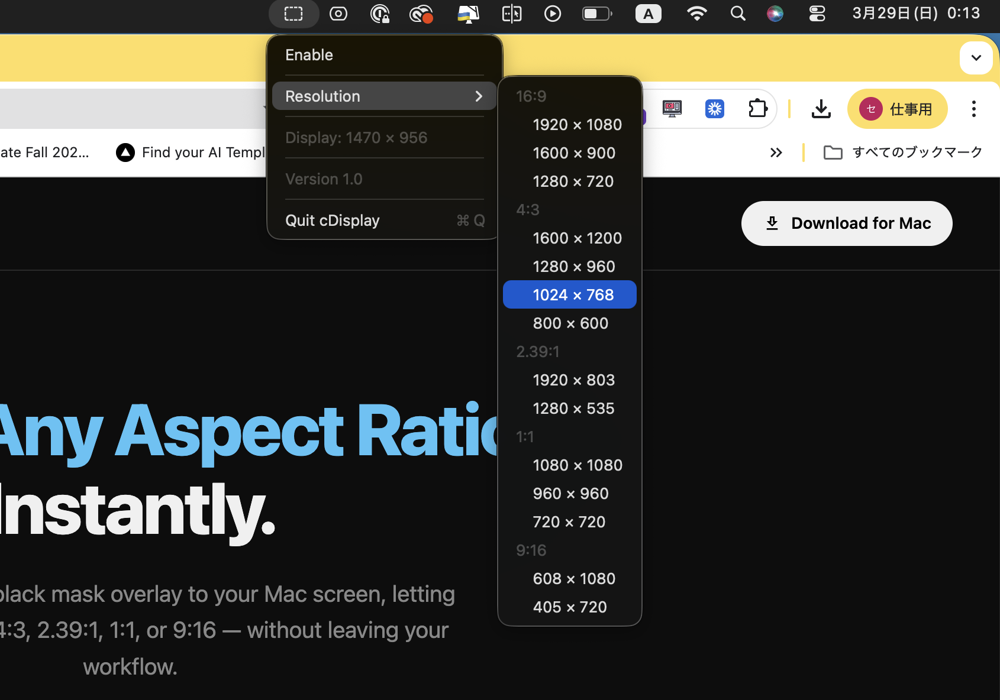

Display Any Aspect Ratio.
Instantly.
cDisplay applies a black mask overlay to your Mac screen, letting you preview 16:9, 4:3, 2.39:1, 1:1, or 9:16 — without leaving your workflow.
Download for Mac — FreeWho It's For
Built for creators who care about framing.
Whether you're editing a film, going live on Twitch, or producing for TikTok — cDisplay shows you exactly what your audience will see.
Video Editors
Preview cinematic ratios — 2.39:1, 4:3, 16:9 — directly on your desktop while editing in Final Cut Pro, Premiere, or DaVinci Resolve.
Live Streamers
Confirm your OBS output looks exactly right in 16:9 before going live. Capture precisely what your audience sees — no guesswork.
Social Creators
See how your content looks in 9:16 for TikTok & Reels, or 1:1 for Instagram — on your actual Mac screen, before you export.
How It Works
Three clicks. Zero friction.
cDisplay lives in your menu bar and stays out of the way until you need it.
Click the menu bar icon
cDisplay runs as a lightweight menu bar app. Always accessible, never cluttering your Dock or workspace.
Choose your aspect ratio
Pick from 16:9, 4:3, 2.39:1, 1:1, or 9:16. Multiple resolution presets available for each ratio.
Your display adapts
cDisplay changes the resolution and overlays a precise black mask. Your screen instantly shows the exact framing you need.

Menu bar dropdown — pick an aspect ratio and resolution in seconds.
Features
Everything you need. Nothing you don't.
Designed to be simple, reliable, and unobtrusive.
Support
Like cDisplay?
cDisplay is a one-person project. If it saves you time in your workflow, a coffee is always appreciated — and helps keep development going.